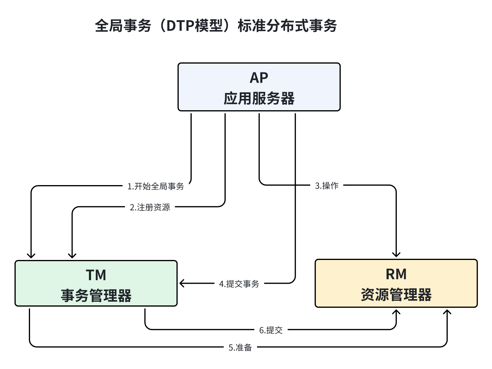

141介绍:2 -> MyCat是一个实现MySQL协议的Server, 就是一个数据库的代理, 客户端使用就跟正常连接MySQLServer一样, MyCat核心功能就是分库分表, 读写分离.3
4专业名词:5 -> 逻辑库: 对数据分片之后, 从原来的一个库分成多个库, 逻辑库就是完整的数据库集群.6 -> 逻辑表: 完整的数据表集群.7 -> 分片表: 将数据按照一定规则进行拆分, 每个表中都会存储部分数据, 这个表就是分片表.8 -> 非分片表: 针对不需要进行数据拆分的表.9 -> ER表: MyCat中基于E-R关系数据分片策略, 子表的记录与所关联的父表记录在同一个数据分片上, 子表依赖父表通过表分组保证数据不会跨库操作.10 -> 全局表: 需要在每个分片中都创建一样的表, 表数据完全一样, 比如字典表.11 -> 分片节点: 每个表分片所在的数据库就是分片节点, dataNode.12 -> 节点主机: 一个或多个分片节点所在的服务器就是节点主机, 为避免高并发需要将读写压力均匀分配在不同的节点主机上.13 -> 分片规则: 将表按照不同的规则进行水平拆分, 并将数据存储在具体某一个分片节点上.14
1091Server.xml: 配置用户和防火墙配置.2 -> user标签: 定义MyCat登录的用户和权限.3 <user name="user">4 <property name="password">user</property>5 <property name="schemas">t_order</property>6 <property name="readOnly">true</property>7 <property name="defaultSchema">t_order</property>8 </user>9 -> firewall标签: 访问限制标签.10 <firewall>11 <!-- ip白名单 用户对应的可以访问的 ip 地址 -->12 <whitehost>13 <host host="127.0.0.*" user="root"/>14 <host host="127.0.*" user="root"/>15 <host host="127.*" user="root"/>16 <host host="1*7.*" user="root"/>17 </whitehost>18 <!-- 黑名单允许的 权限 后面为默认 -->19 <blacklist check="true">20 <property name="selelctAllow">false</property>21 <property name="selelctIntoAllow">false</property>22 <property name="updateAllow">false</property>23 <property name="insertAllow">false</property>24 <property name="deletetAllow">false</property>25 <property name="dropAllow">false</property>26 </blacklist>27 </firewall>28
29schema.xml: 配置逻辑表信息.30 -> schema标签: 配置逻辑库.31 <schema name="t_order" checkSQLschema="true" sqlMaxLimit="100" dataNode="dn1"></schema>32 --> dataNode: 分片节点, string类型.33 --> sqlMaxLimit: 查询结果数量限制, int类型.34 --> checkSQLschema: 是否去表库名, boolean类型.35 -> table标签: 配置逻辑表.36 <table name="t_order" dataNode="dn1,dn2" rule="b_order_rule" primaryKey="ID" autoIncrement="true"/>37 --> name: 逻辑表名, string.38 --> dataNode: 分片节点, string.39 --> rule: 分片规则, string.40 --> ruleRequired: 是否强制绑定分片规则, string.41 --> primaryKey: 主键, string.42 --> type: 逻辑表类型, 全局表;普通表.43 --> autoincrement: 是否自增主键, boolean.44 --> subTable: 分表, string.45 --> needAddLimit: 是否为查询sql自动添加limit限制, boolean.46 -> dataNode标签: 配置数据节点.47 <dataNode name="dn1" dataHost="t_order_host_1" database="db_1" />48 --> name: 定义数据节点名称, 唯一存在, string.49 --> dataHost: 分片主机, string.50 --> database: 数据库, string.51 -> dataHost标签: 配置分片主机信息, 包含数据库实例, 读写分离, 心跳语句.52 <dataHost name="t_order_host_1" maxCon="100" minCon="10" balance="0" writeType="0" dbType="mysql" dbDriver="native" switchType="1" slaveThreshold="100"/>53 --> name: 节点主机名称, string.54 --> maxCon: 最大连接数, int.55 --> minCon: 最小连接数, int.56 --> balance: 读操作负载均衡, int. 57 ---> 0: 所有读操作发送到可用的writeHost.58 ---> 1: 所有读操作随机发送到readHost和对应的的writehost.59 ---> 2: 所有读操作随机发送到readHost和writehost.60 ---> 3: 所有读操作随机发送到wirteHost对应的readHost, wir特Host不负责读.61 --> writeType: 写操作负载均衡类型, int.62 ---> 0: 所有写操作都发送到可用的writehost.63 ---> 1: 所有写操作都随机发送到readHost.64 ---> 2: 所有写操作都随机发送到writeHost;readHost.65 --> dbType: 数据库类型, string.66 --> dbDriver: 数据库驱动, string.67 --> switchType: 主从切换类型, string.68 ---> -1: 不自动切换.69 ---> 1: 自动切换.70 ---> 2: 基于MySQL主从同步状态决定是否切换.71 ---> 3: 基于MySQLCluster集群切换机制.72 -> heartbeat标签: 心跳.73 <dataHost>74 <heartbeat>select user()</heartbeat>75 </dataHost>76 -> writeHost和readHost标签: 配置数据库读写分离信息. writehost宕机对应的readhost也不可用, 并切换到备的writehost上.77 <dataHost name="t_order_host_1" maxCon="100" minCon="10" balance="0"78 writeType="0" dbType="mysql" dbDriver="native" switchType="1"79 slaveThreshold="100">80 <heartbeat>select user()</heartbeat>81 <writeHost host="M1" url="192.168.95.133:3306" user="root" password="1234"> 82 </writeHost>83 </dataHost>84 --> host: 主机名, string.85 --> url: 连接url, string.86 --> password: 密码, string.87 --> user: 用户名, string.88 --> weight: 权重, string.89 --> usingDecrypt: 是否对密码进行加密, 默认0不加密, int.90
91rule.xml: 分片规则, 供schema使用.92 -> tableRule标签: 指定分片规则.93 <tableRule name="c_order_rule">94 <rule>95 <columns>user_id</columns>96 <algorithm>partitionByOrderFunc</algorithm>97 </rule>98 </tableRule>99 --> name: 分片规则名称.100 --> columns: 指定要拆分的列.101 --> algorithm: 使用function标签中的name属性, 连接表规则和具体路由算法.102 -> function标签: 具体的分片算法.103 <function name="partitionByOrderFunc" class="io.mycat.route.function.PartitionByMod">104 <property name="count">2</property>105 </function>106 --> name: 指定算法的名称.107 --> class: 指定路由算法的类名称.108 --> property: 具体算法需要使用到的属性.109
191介绍: 2 -> 在实现分库分表的情况下, 数据库自增主键无法保证自增主键的全局唯一, 3 MyCat提供了全局的sequence, 并提供了包含本地配置和数据库配置多种实现方式, 在Server.xml中进行配置.4
5配置标签:6 <system>7 <property name="sequenceHandlerType">0</property>8 </system>9 -> 0: 本地文件方式. MyCat将sequence配置到文件中, 使用sequence中的配置后, MyCat会更新sequence_conf.properties文件中的值.10 -> 1: 使用数据库方式生成. 在数据库中创建一张专门存放主键的表.11 CREATE TABLE MYCAT_SEQUENCE(12 name VARCHAR(64) NOT NULL COMMENT "名称",13 current_value BIGINT(20) NOT NULL COMMENT "当前值",14 increment INT NOT NULL DEFAULT 1 COMMENT "步长",15 `PRIMARY KEY (name)) ENGINE = InnoDB;16 -> 2: 使用本地时间戳方式. id分64位, 42毫秒时间戳+5机器码+12重复累加换算成10进制是18位数, 每毫秒并发12位2进制, 在sequence_time_conf.properties中进行配置.17 -> 3: zkId生成器. zk连接信息放在myid.properties的zkURL中配置, 基于zk月本地配置的分布式ID生成器生成. current time millis + clusterId + instanceId + threadId + increment.18 -> 4: zk生成递增主键. 19
971类型:2 -> 时间类: 按天分片, 自然月分片.3 -> 哈希类: hash固定分片.4 -> 取模类: 取模分片, 范围分片.5 -> 其他类: 枚举分片, 范围约定分片.6
7自动分片: 8 <tableRule name="auto-sharding-long">9 <rule>10 <columns>id</columns>11 <algorithm>rang-long</algorithm>12 </rule>13 </tableRule>14 <function name="rang-long"15 class="io.mycat.route.function.AutoPartitionByLong">16 <property name="mapFile">autopartition-long.txt</property>17 </function>18autopartition-long.txt:19 # range start-end ,data node index20 # K=1000,M=10000.21 0-500M=022 500M-1000M=123 1000M-1500M=224
25枚举分片:26 <tableRule name="sharding-by-intfile">27 <rule>28 <columns>sharding_id</columns>29 <algorithm>hash-int</algorithm>30 </rule>31 </tableRule>32 <function name="hash-int"33 class="io.mycat.route.function.PartitionByFileMap">34 <property name="mapFile">partition-hash-int.txt</property>35 <!-- 找不到分片时设置容错规则，把数据插入到默认分片0里面 -->36 <property name="defaultNode">0</property>37 </function>38partition-hash-int.txt:39 10000=040 10010=141
42取模分片: 根据分片字段值取模分片数.43 <tableRule name="mod-long">44 <rule>45 <columns>id</columns>46 <algorithm>mod-long</algorithm>47 </rule>48 </tableRule>49 <function name="mod-long" class="io.mycat.route.function.PartitionByMod">50 <!--分片数 -->51 <property name="count">3</property>52 </function>53
54冷热数据分片: 根据日期进行和数据冷人分片, 最近n个月的到实时交易库查询, 超过n个月的按照m天分片.55 <tableRule name="sharding-by-date">56 <rule>57 <columns>create_time</columns>58 <algorithm>sharding-by-hotdate</algorithm>59 </rule>60 </tableRule>61 <function name="sharding-by-hotdate"62 class="org.opencloudb.route.function.PartitionByHotDate">63 <!-- 定义日期格式 -->64 <property name="dateFormat">yyyy-MM-dd</property>65 <!-- 热库存储多少天数据 -->66 <property name="sLastDay">30</property>67 <!-- 超过热库期限的数据按照多少天来分片 -->68 <property name="sPartionDay">30</property>69 </function>70
71一致性hash分片:72 <tableRule name="sharding-by-murmur">73 <rule>74 <columns>id</columns>75 <algorithm>murmur</algorithm>76 </rule>77 </tableRule>78 <function name="murmur"79 class="io.mycat.route.function.PartitionByMurmurHash">80 <!-- 默认是0 -->81 <property name="seed">0</property>82 <!-- 要分片的数据库节点数量，必须指定，否则没法分片 -->83 <property name="count">2</property>84 <!-- 一个实际的数据库节点被映射为这么多虚拟节点，默认是160倍，也就是虚拟节点数是物理节点数的160倍-->85 <property name="virtualBucketTimes">160</property>86 <!-- 87 <property name="weightMapFile">weightMapFile</property> 88 节点的权重, 没有指定权重的节点默认是1. 以properties文件的格式填写, 以从0开始到count-1的89 整数值也就是节点索引为key, 以节点权重值为值. 所有权重值必须是正整数, 否则以1代替 90 -->91 <!-- 92 <property name="bucketMapPath">/etc/mycat/bucketMapPath</property>93 用于测试时观察各物理节点与虚拟节点的分布情况, 如果指定了这个属性, 会把虚拟节点的94 murmur hash值与物理节点的映射按行输出到这个文件，没有默认值，如果不指定，就不会输出任何东西 95 -->96 </function>97
111-> 下载Mycat-server工具包[提示: 需要先安装jdk] http://dl.mycat.org.cn/1.6.7.6/2-> 解压Mycat工具包.3-> 进入mycat/bin, 启动Mycat.4 5-> 启动命令：./mycat start6-> 停止命令：./mycat stop7-> 重启命令：./mycat restart8-> 查看状态：./mycat status9 10-> 访问: mysql -uroot -proot -h127.0.0.1 -P806611 server.xml配置
71<property name="sequenceHandlerType">0</property>2
3<user name="root" defaultAccount="true">4 <property name="password">root</property>5 <property name="schemas">db</property>6 <property name="defaultSchema">db</property>7</user>schemal.xml配置
181<mycat:schema xmlns:mycat="http://io.mycat/">2 <schema name="db" checkSQLschema="true" sqlMaxLimit="100" randomDataNode="dn1">3 <!-- 分片规则 -->4 <table name="user" primaryKey="id" dataNode="dn1,dn2" rule="sharding-by-intfile" autoIncrement="true">5 </table>6 </schema>7
8 <dataNode name="dn1" dataHost="localhost1" database="db1" />9 <dataNode name="dn2" dataHost="localhost1" database="db2" />10
11 <dataHost name="localhost1" maxCon="1000" minCon="10" balance="0"12 writeType="0" dbType="mysql" dbDriver="jdbc" switchType="1" slaveThreshold="100">13 <heartbeat>select user()</heartbeat>14 <writeHost host="hostM1" url="jdbc:mysql://localhost:3306" user="root"15 password="root">16 </writeHost>17 </dataHost>18</mycat:schema>rule.xml配置
111<!-- 使用取模分片 -->2<function name = "mod-long" class = "io.mycat.route.function.PartitionByMod">3 <property name = "count"> 2</property>4</function>5
6<mycat:schema xmlns:mycat="http://io.mycat">7 <schema name = "db" checkSQLschema= "true" sqlMaxLimit = "100" randomDataNode = "dn1">8 <table name = "user" primaryKey = "id" dataNode = "dn1,dn2" 9 rule = "mod-long" autoIncrement = "true"/>10 </schema>11</mycat:schema>101全局表类似于ShardingJDBC中的广播表, 走全路由方式.2schema.xml配置3
4<mycat:schema xmlns:mycat="http://io.mycat/">5 <schema name="db" checkSQLschema="true" sqlMaxLimit="100" randomDataNode="dn1">6 <!-- 分片规则 -->7 <table name="directs" primaryKey="id" dataNode="dn1,dn2" type = "global" autoIncrement="true">8 </table>9 </schema>10</mycat:schema>331注意: 在schema.xml文件中配置Mycat读写分离. 使用前需要搭建MySQL主从架构, 并实现主从复制, Mycat不负责数据同步问题.2
3dataHost配置:4 -> 方式1: 添加一个dataHost5 <dataHost name="localhost1" maxCon="1000" minCon="10" balance="1" writeType="0"6 dbType="mysql" dbDriver="native">7 <heartbeat>select user()</heartbeat>8 <!-- can have multi write hosts -->9 <writeHost host="M1" url="localhost:3306" user="root" password="root">10 <readHost host="S1" url="localhost:3307" user="root" password="root" weight="1"/>11 </writeHost>12 </dataHost>13 -> 方式2: 高可用方式. 14 <dataHost name="localhost1" maxCon="1000" minCon="10" balance="1" writeType="0"15 dbType="mysql" dbDriver="native">16 <heartbeat>select user()</heartbeat>17 <!-- can have multi write hosts -->18 <writeHost host="M1" url="localhost:3306" user="root" password="root"></writeHost>19 <writeHost host="S1" url="localhost:3307" user="root" password="root"></writeHost>20 </dataHost>21
22dataNode和table配置:23 <schema name="db" checkSQLschema="true" sqlMaxLimit="100" randomDataNode="dn1">24 <table name="user" primaryKey="id" dataNode="dn1,dn2" rule="mod-long" autoIncrement="true"></table>25 <table name="directs" primaryKey="id" dataNode="dn1,dn2" type="global" autoIncrement="true"></table> 26 <table name="t_user" primaryKey="id" dataNode="dn3" autoIncrement="true"></table>27 </schema>28 <dataNode name="dn3" dataHost="localhost2" database="db"/>29 <dataNode name="dn1" dataHost="localhost1" database="db0"/>30 <dataNode name="dn2" dataHost="localhost1" database="db1"/>31
32注意: 在配置主从的时候主键生成策略与其他的配置不能冲突.33
161-> 强制走从:2/*!mycat:db_type=slave*/ select * from t_user//有效3/*#mycat:db_type=slave*/ select * from t_user4
5-> 强制走写:6/*!mycat:db_type=master*/ select * from t_user //有效7/*#mycat:db_type=slave*/ select * from t_user8
9myCat1.6版本后支持还支持以下注解.10/*!mycat:sql=sql */ // 指定真正执行的SQL11/*!mycat:schema=schema1 */ // 指定走那个schema12/*!mycat:datanode=dn1 */ // 指定sql要运行的节点13/*!mycat:catlet=io.mycat.catlets.ShareJoin */ // 通过catlet支持跨分片复杂SQL实现以及存储过程支持等14
15注意: /*#*/和/***/支持但是功能不完备有可能出错, 建议使用/*!*/.16 241说明: 2-> Mycat1.4开始支持MySQL主从复制状态绑定的读写分离机制, 让读更加安全可靠, 需要将MyCAT心跳检查语句配置为 show slave status.3 dataHost上定义两个新属性: switchType="2"与slaveThreshold="100", MySQL主从复制状态绑定的读写分离与切换机制, Mycat心跳机制通过检测show slave status中的"Seconds_Behind_Master", "Slave_IO_Running", "Slave_SQL_Running"三个字段来确定当前主从同步的状态以及Seconds_Behind_Master 主从复制时延,4 当Seconds_Behind_Master > slaveThreshold时, 读写分离筛选器会过滤掉此Slave机器, 防止读到很久之前的旧数据, 而当主节点宕机后,切换逻辑会检查Slave上的Seconds_Behind_Master是否为0. 为0时则表示主从同步. 可以安全切换, 否则不会切换.5<dataHost name="localhost1" maxCon="1000" minCon="10" balance="0" writeType="0"6 dbType="mysql" dbDriver="native" switchType="2" slaveThreshold="100">7 <heartbeat>show slave status </heartbeat>8 <!-- can have multi write hosts -->9 <writeHost host="M1" url="localhost:3306" user="root" password="123456">10 </writeHost>11 <writeHost host="S1" url="localhost:3316" user="root"12</dataHost>13
14-> 1.4.1开始支持MySQL集群模式, 让读更加安全可靠, 15 配置如下: MyCAT 心跳检查语句配置为 show status like 'wsrep%', dataHost上定义两个新属性: switchType="3"此时意味着开启MySQL集群复制状态状态绑定的读写分离与切换机制, Mycat心跳机制通过检测集群复制时延时, 如果延时过大或者集群出现节点问题不会负载改节点.16<dataHost name="localhost1" maxCon="1000" minCon="10" balance="0" writeType="0"17 dbType="mysql" dbDriver="native" switchType="3">18 <heartbeat>show status like ‘wsrep%’</heartbeat>19 <writeHost host="M1" url="localhost:3306" user="root" password="123456">20 </writeHost>21 <writeHost host="S1" url="localhost:3316" user="root" password="123456">22 </writeHost>23</dataHost>24
环境准备
41master1 192.168.186.102master2 192.168.186.113slave1 192.168.186.124slave2 192.168.186.13MyCat server.xml
111 2<mycat:server xmlns:mycat="http://io.mycat/">4 <system>5 <user name="root" defaultAccount="true">6 <property name="password">root</property>7 <property name="schemas">test</property>8 <property name="defaultSchema">test</property>9 </ser>10</mycat:server>11
MyCat schemal.xml
211 2<mycat:schema xmlns:mycat="http://io.mycat/">4
5 <schema name="test" checkSQLschema="false" sqlMaxLimit="100" dataNode="dn1">6 <!--设置表的主键生成策略 采用雪花算法-->7 <table name="user" primaryKey="id" dataNode="dn1" rule="sharding-by-intfile" autoIncrement="true">8 </table>9 </schema>10 <dataNode name="dn1" dataHost="host1" database="test" />11 <dataHost name="host1" maxCon="1000" minCon="10" balance="1"12 writeType="0" dbType="mysql" dbDriver="native" switchType="1" slaveThreshold="100">13 <heartbeat>select user()</heartbeat>14 <writeHost host="hostM1" url="192.168.186.10:3306" user="root" password="root">15 <readHost host="hostS1" url="192.168.186.12:3306" user="root" password="root"></readHost>16 </writeHost>17 <writeHost host="hostM2" url="192.168.186.11:3306" user="root" password="root">18 <readHost host="hostS2" url="192.168.186.13:3306" user="root" password="root"></readHost>19 </writeHost>20 </dataHost>21</mycat:schema>
101介绍: Mycat目前没有出来跨分片的事务强一致性支持, 单库内部可以保证事务的完整性, 如果跨库事务, 在执行的时候任何分片出错, 可以保证所有分片回滚, 但是一旦应用发起commit指令, 无法保证所有分片都成功, 考虑到某个分片挂的可能性不大所以称为弱 XA.2 3XA事务使用 4 -> Mycat实现XA标准分布式事务, Mycat作为XA事务协调者角色, 即使事务过程中Mycat宕机挂掉, 5 由于Mycat会记录事务日志, 所以Mycat恢复后会进行事务的恢复善后处理工作. 考虑到分布式事务的性能开销比较大, 所以只推荐在全局表的事务以及其他一些对一致性要求比较高的场景.6 --> XA事务需要设置手动提交set autocommit=0;7 --> 使用该命令开启XA事务set xa=on;8 --> 执行相应的SQL语句部分.9 --> 提交或回滚事务commit;/rollback;10
资源
71 角色 ip 机器名2mycat1 192.168.186.10 node013mycat2 192.168.186.11 node024HAProxy(master) 192.168.186.12 node035Keepalived(master) 192.168.186.12 node036HAProxy(backup) 192.168.186.13 node047keepalived(backup) 192.168.186.13 node04安装HAProxy
601-> 1.准备好HAProxy的安装包2-> 2.解压到/usr/local目录3-> 3.进入到解压后的目录, 查看内核版本, 进行编译.4 cd /usr/local/haproxy-1.8.25/5 uname -r6 make TARGET=linux31 //根据自己的linux系统进行安装 7-> 4.编译完成之后, 开始进行安装.8 make install PREFIX=/usr/local/haproxy9-> 5.安装完成之后, 创建目录, 创建HAProxy配置文件.10 mkdir -p /usr/data/haproxy11 mkdir /usr/local/haproxy/conf12 vi /usr/local/haproxy/haproxy.conf13-> 6.向配置文件中添加配置信息14 global15 log 127.0.0.1 local016 #log 127.0.0.1 local1 notice17 #log loghost local0 info18 maxconn 409619 chroot /usr/local/haproxy20 pidfile /usr/data/haproxy/haproxy.pid21 uid 9922 gid 9923 daemon24 #debug25 #quiet26defaults27 log global28 mode tcp29 option abortonclose30 option redispatch31 retries 332 maxconn 200033 timeout connect 500034 timeout client 5000035 timeout server 5000036listen proxy_status37 bind :4806638 mode tcp39 balance roundrobin40 server mycat_1 192.168.186.10:8066 check inter 10s41 server mycat_2 192.168.186.11:8066 check inter 10s42frontend admin_stats43 bind :777744 mode http45 stats enable46 option httplog47 maxconn 1048 stats refresh 30s49 stats uri /admin50 stats auth admin:admin51 stats hide-version52 stats admin if TRUE53-> 7.启动haproxy服务54 /usr/local/haproxy/sbin/haproxy -f /usr/local/haproxy/conf/haproxy.conf55-> 8.查看haproxy的进程，如果存在则说明没有问题56 ps -ef | grep haproxy57-> 9.打开浏览器访问,用户名为admin，密码为12312358 http://192.168.186.12:7777/admin59
60同样的步骤在node4上安装安装keepalive
531-> 1.准备好Keepalived安装包2-> 2.解压到/usr/local目录3-> 3.安装需要依赖的环境组件4 yum install gcc openssl-devel popt-devel -y5-> 4.进入到解压目录，进行编译6 ./configure --prefix=/usr/local/keepalived7-> 5.编译完成之后，进行安装8 make && make install9-> 6.将keepalived的服务注册为系统服务10 cp /usr/local/keepalived-1.4.5/keepalived/etc/init.d/keepalived /etc/init.d/11 mkdir /etc/keepalived12 cp /usr/local/keepalived/etc/keepalived/keepalived.conf /etc/keepalived/13 cp /usr/local/keepalived-1.4.5/keepalived/etc/sysconfig/keepalived /etc/sysconfig/14 cp /usr/local/keepalived/sbin/keepalived /usr/sbin/15-> 7.修改配置文件16 cd etc/keepalived/17 vi keepalived.conf18 ! Configuration File for keepalived19 global_defs {20 notification_email {21 acassen.loc22 failover.loc23 sysadmin.loc24 }25 notification_email_from Alexandre.Cassen.loc26 smtp_server 127.0.0.127 smtp_connect_timeout 3028 router_id LVS_DEVEL29 vrrp_skip_check_adv_addr30 vrrp_garp_interval 031 vrrp_gna_interval 032 }33
34 vrrp_instance VI_1 {35 state MASTER36 interface eth037 virtual_router_id 5138 priority 10039 advert_int 140 authentication {41 auth_type PASS42 auth_pass 111143 }44 #虚拟ip45 virtual_ipaddress {46 192.168.186.200/24 dev eth0 label eth0:3:47 }48 }49-> 8.启动keepalived50 service keepalived start51-> 9.登录验证52 mysql -uroot -proot -h 192.168.186.13 -P 4806653